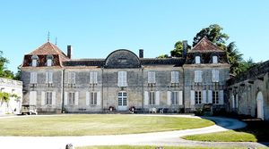
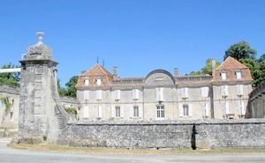
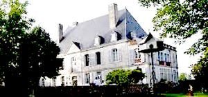

Recensement Jean-Claude Truffet
| Département | 24 — Dordogne |
| Canton | Verteillac |
| Commune | Gout-Rossignol |
| Type d'édifice | Château |
| Période d'origine | XVIII |
| Coordonnées GPS | 45° 24' 45" Nord, 0° 24' 43" Est Mitounias GPS : 45° 24' 18" Nord, 0° 24' 09" Est Vassaldie grav 2-3GPS : 45° 25' 30" Nord, 0° 23' 30" Est |



A Gout-Rossignol le château de Jaurias, XVIIIe et XIXe siècles, de la Vassaldie, XVIIIe siècle, inscrit aux M.H, manoir de Bouillaguet, XVIIIe siècle. manoir de Mitonias, XVIIIe siècle.
VASSALDIE, le château actuel aurait été construit entre 1706 et 1714. Le château de la Vassaldie doit son nom à une famille noble, les Vassal. Construit à l'emplacement d'un manoir médiéval englobé à l'intérieur des communs du côté est, il fut la maison de maître d'un domaine viticole, dont la production persista jusque dans la première moitié du XXe siècle. Les décors intérieurs et la distribution ont été modifiés à la fin du XIXe siècle, ainsi que la cage d'escalier, autrefois au centre, fut déplacée, et un couloir fut crée du côté méridional, à l'étage. Cette demeure classique établie au sommet d'un léger coteau, comprend un corps de logis central à un étage carré flanqué de deux pavillons ; l'ensemble est orienté au sud et donne sur une grande cour. Le corps de logis central est surmonté d'un fronton semi-circulaire agrémenté d'un cartouche rectangulaire en creux en relief côté jardin. Le bâtiment, couvert d'un toit à deux pans brisés masqué par une balustrade en pierre, est flanqué de deux pavillons rectangulaires au toit mansardé, percés par deux lucarnes décorées de volutes et sommées d'un fronton rond en coquille. Lesbâtiments propres à l'exploitation viticole se développent de façon rationnelle.
JAURIAS, il date du XVIIIe et XIXe siècles. Le château de Jaurias a été construit en 1760 par Léonard Aubin, écuyer, sieur du Tranchard, conseiller-secrétaire du roi, peu de temps avant sa mort. Son fils Denis-François, ancien mousquetaire, ayant émigré à la Révolution, il sera vendu comme bien national. Le château fut bati aux alentours de1770 par Denis Aubin de Jaurias, mousquetaire de la garde du roi.
JAURIAS il remplaça sans doute un manoir du XVIe siècle. Le corps de bâtiment principal a été agrandi au XIXe siècle, un certain nombre de communs ont été rasées après l'établissement du cadastre napoléonien (ils formaient encore en 1825 une cour fermée). Le corps de logis en pierre de taille et moellon de calcaire enduit,se compose d'un étage carré et d'un étage de comble protégés par un toit à longs pans à croupes couvert d'ardoises. Sept travées rythment les deux façades, présence de lucarnes à volutes sur la toiture. Ajouté au XIXe siècle, un pavillon à balustres percé d'ouvertures prolonge le pignon sud-est du château, cette nouvelle aile était une orangerie.
MITOUNIAS, du XVIIIe siècle. Il a été habité par la famille de Sarlandie. Il passa ensuite aux héritiers de la famille de Jaurias. L'entrée se fait par une porte charretière en anse de panier, accompagnée d'une porte piétonne percée dans le mur de clôture. Le logis, en retour d'équerre, est à 1 étage, surmonté de comble et jouxté par une grange-étable. Une cour et un jardin, comporte un pigeonnier de plan circulaire qui complètent le bâti.
Famille de Vassaldie Jaurias famille de Léonard Aubin Mitounias famille de Sarlandie
"
A Gout-Rossigno; Gout Jaurias grav 1 GPS : 45° 24' 45" Nord, 0° 24' 43" Est Mitounias GPS : 45° 24' 18" Nord, 0° 24' 09" Est Vassaldie grav 2-3GPS : 45° 25' 30" Nord, 0° 23' 30" Est